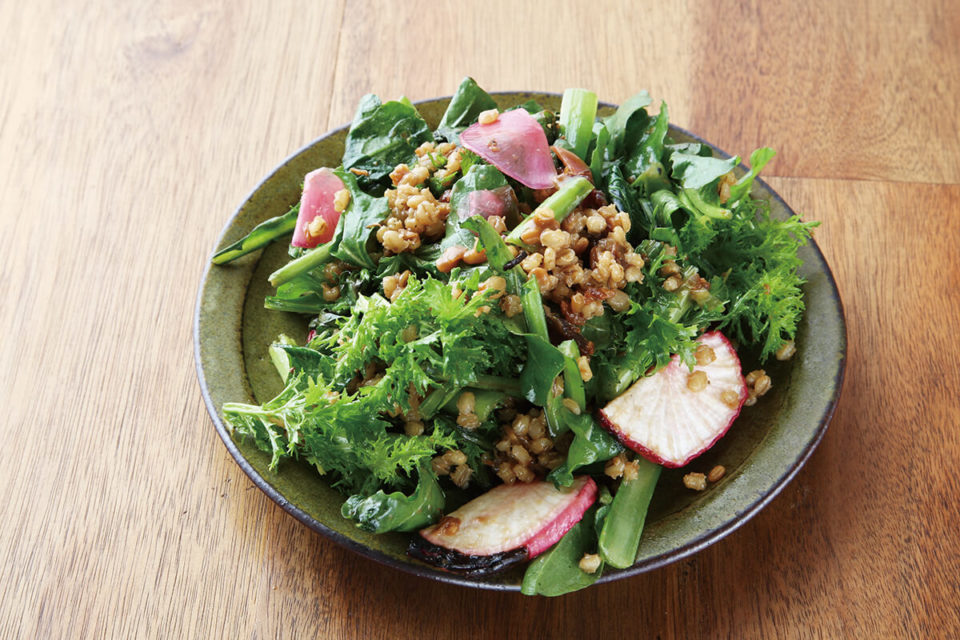
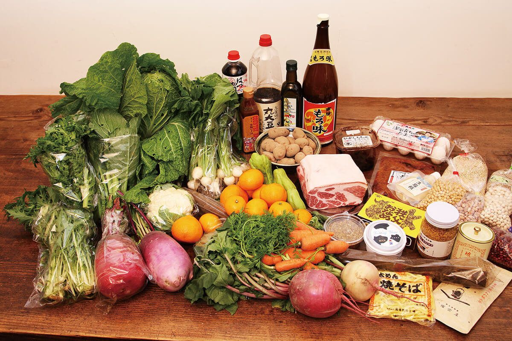
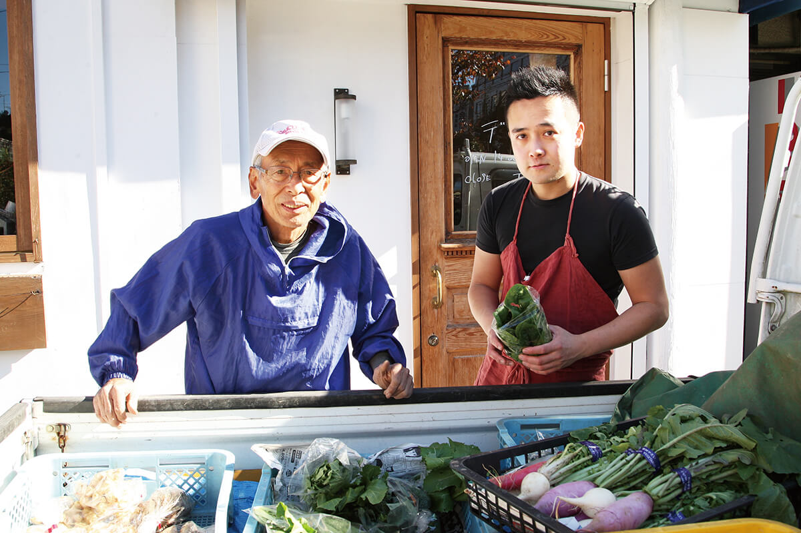
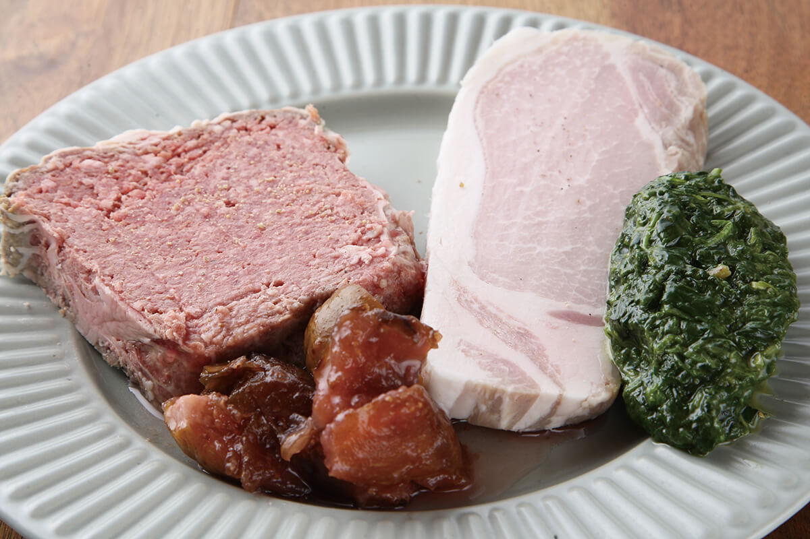
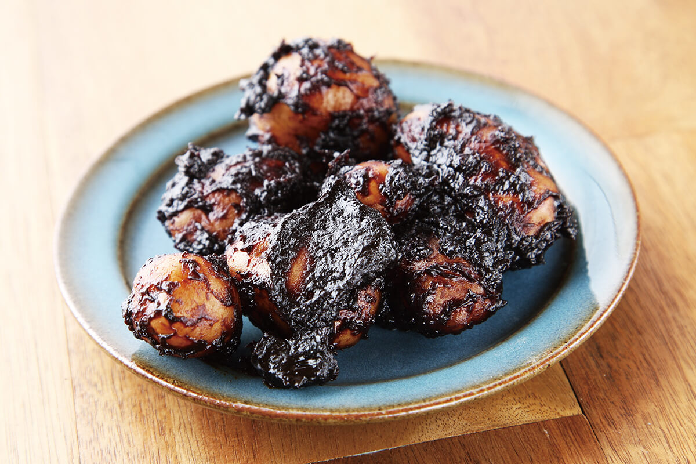
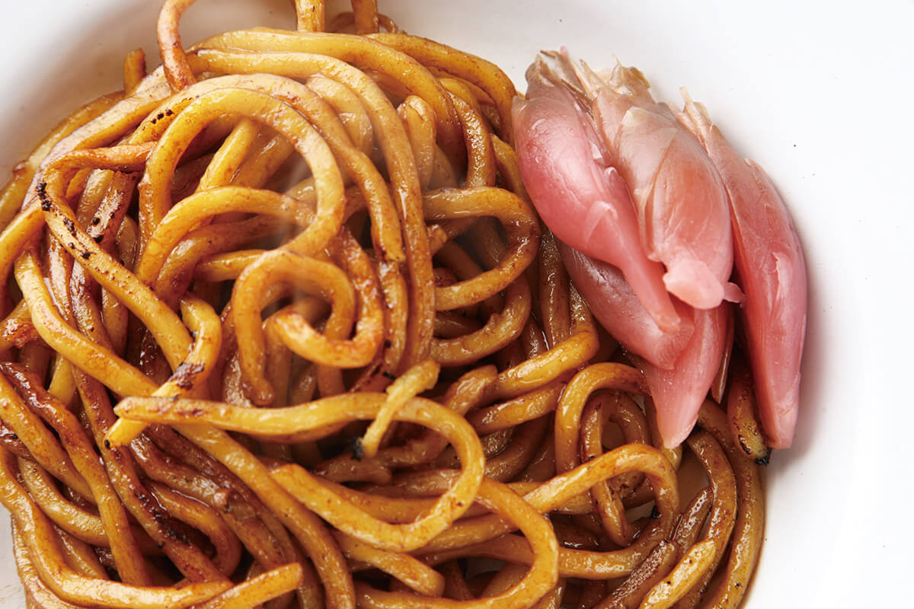
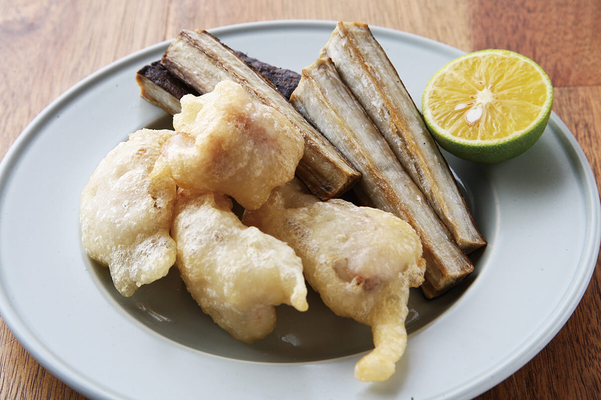

Префектура Сайтама · Омия · еда
«Дэрика» в Омии: бистро, где почти все продукты из префектуры Сайтама

Жители Сайтамы любят повторять, что вкусного у них нет. Шеф маленького бистро в Омии с этим не согласен: почти все продукты у него из родной префектуры, и каждый он выбирал сам, объезжая хозяйства.
Идея
Ресторан из местных продуктов

Если спросить, чем славится кухня Сайтамы, сразу ответить непросто. Даже в хороших ресторанах местные разводят руками: «У нас в Сайтаме вкусного нет». Похоже, жители префектуры недооценивают свои продукты, но нашёлся повар, который решил это опровергнуть.
Бистро «Дэрика» открылось в Омии в марте 2018 года, и почти 100% продуктов здесь из префектуры Сайтама. Шеф и владелец сам ездит к производителям и берёт только то, что убедило его лично, когда он понял, откуда берётся вкус. При этом ещё около 2015 года он почти ничего о местных продуктах не знал.
«Однажды отец купил голубику в магазинчике при ферме неподалёку. Я съел её просто так и удивился. В ресторане я как раз работал с импортной, и сайтамская оказалась явно вкуснее»
шеф «Дэрики»
Он давно мечтал открыть своё дело в родных местах, но не мог решить, каким должно быть заведение в Сайтаме. После той голубики всё встало на свои места: только продукты префектуры, в том числе такие, о которых не знают и сами её жители. С тех пор он почти каждую неделю ездил к производителям и в итоге изучил почти все продукты префектуры. Сайтаму в Японии в шутку дразнят «Дасайтама», от слова «дасай», «немодный». Бистро шефа заслуживает другого прозвища: «До-Сайтама», Сайтама до мозга костей.

Кухня
Как приготовить вкус Сайтамы
Что же такое кухня из сайтамских продуктов? Основа меню французская, но в нём есть китайские и японские ходы. Шеф учился французской кухне, и лучше всего ему удаётся то, чему он научился в одном токийском ресторане: домашние ветчины, колбасы и другое шаркютри. В виде ветчины мясо раскрывает вкус глубже.

Гости ценят и вино: в нём шеф разбирается со времён работы в известном токийском винном баре и подбирает к нему блюда. А закончить хороший вечер можно, вопреки обычаям бистро, рисом или лапшой.
«Беру продукт в руки и думаю, как его приготовить»
шеф «Дэрики»
Иногда он готовит продукт классически, иногда приправляет тем, что есть только в Сайтаме, и поворачивает блюдо в японскую, западную или китайскую сторону, а то и в экзотическую. По меню видно, что шеф готовит с удовольствием, и угадать, чем он удивит в следующий раз, невозможно.

Например, яйцо с устричным соусом манит ароматом китайской кухни. В «Накацугава-имо» с мисо главный герой местный овощ: клубень примерно вдвое меньше обычного картофеля, клейкий, но почти без вкуса, поэтому его и доводят густым мисо.

В якисобе важна не лапша, а маринованный мёга рядом с ней. В салат из ячменя добавляют «онамэ», мисо из ячменя и сои, какое делают только в Сайтаме. Это настоящая домашняя еда префектуры, и у каждого производителя и в каждой семье у неё свой вкус.
«Я и сам объехал ещё не всех. Вкусных продуктов наверняка ещё много. Встречам с продуктами нет конца»
шеф «Дэрики»
Распорядок
Бистро, которое открывается в 14:00
Удивляет здесь и расписание: в 2020 году бистро открывалось в 14:00, последний заказ принимали в 20:00, а закрывалось оно в 21:00. Объяснение простое: с самого утра шеф хочет ездить за продуктами к фермерам. Для этого нужно рано ложиться и рано вставать, так часы и сдвинулись. Приоритеты у него не такие, как у других рестораторов.

Характер шефа виден во всём. Бистро стоит чуть в стороне от оживлённых улиц у станции, а сакэ, вино, виски и пиво подобраны для настоящих ценителей. Иногда помогает старшая сестра, но в основном шеф всё делает сам: закупает продукты, готовит заготовки, убирает, стоит у плиты и обслуживает гостей. Поэтому и работать приходится так, как удобнее ему одному.
И всё же здесь удивительно уютно. Шеф на кухне явно получает удовольствие, а блюда точно выверены по вкусу. После такого ужина называть Сайтаму «Дасайтамой» уже неловко.
«Дэрика»
- Адрес
- префектура Сайтама, Сайтама, район Омия, Миятё, 3-161
- Телефон
- +81 48-856-9522
- Часы работы
- 14:00–21:00 (последний заказ в 20:00)
- Выходные
- вторник
- Цены / Вход
- только блюда по меню (а-ля карт)
Фото: Мунэаки Маэда.